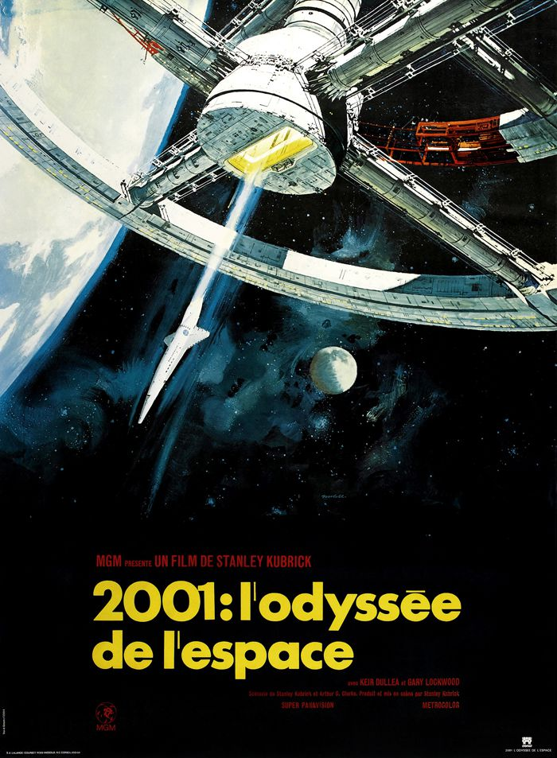

2001 L'Odyssée de l'espace
Film de Stanley Kubrick Aventure et science-fiction 2 h 40 min 3 avril 1968 Avec Keir Dullea, Gary Lockwood, William Sylvester A l'aube de l'Humanité, dans le désert africain, une tribu de primates subit les assauts répétés d'une bande rivale, qui lui dispute un point d'eau. La découverte d'un monolithe noir inspire au chef des singes assiégés un geste inédit et décisif. En 2001, quatre millions d'années plus tard, un vaisseau spatial évolue en orbite lunaire au rythme langoureux du "Beau Danube Bleu". A son bord, le Dr. Heywood Floyd enquête secrètement sur la découverte d'un monolithe noir qui émet d'étranges signaux vers Jupiter.